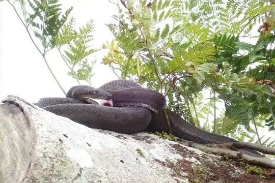
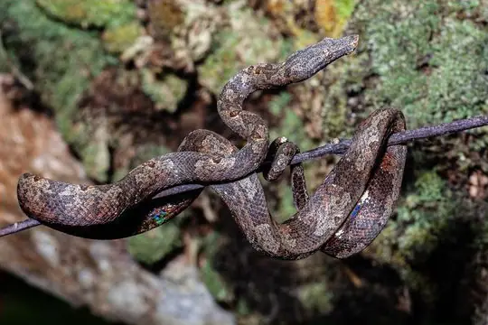
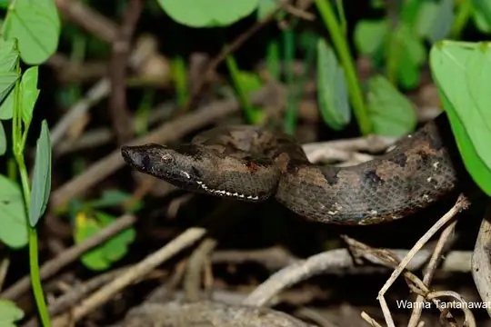
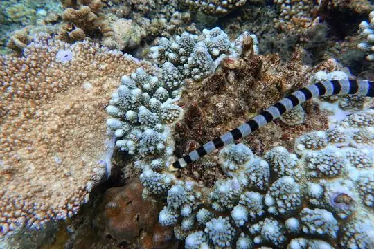

Snakes of Vanuatu
5 snake species are recorded in Vanuatu in SnakeList: 2 venomous and 3 non-venomous, from 2 families.
- 5species
- 2venomous
- 3non-venomous
- 2families
These totals count the snakes SnakeList records as living in Vanuatu. A species counts if it is recorded anywhere in the country, so not every snake lives in every region.
Species
Showing 5 species

Bibron's Pacific BoaCandoia bibroni
Pacific Boa (carinata)Candoia carinata
Solomon Island Ground BoaCandoia paulsoni Yellow-lipped Sea KraitLaticauda colubrina
Yellow-lipped Sea KraitLaticauda colubrina
Yellow-lipped Sea SnakeLaticauda frontalis
No snakes in Vanuatu match.